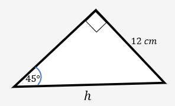

A. SINUS
Mari mengamati
berikut beeberapa contoh dari perbandingan trigonometri
perhatikan Gambar 1.4 dibawah ini
Gambar 1.4

Diketahui panjang AB = 12 cm, BC = 9 cm, dan AC = 15 cm Berapakah sin α ?
| No | Keterangan | Proses |
|---|---|---|
| 1 | Apa Saja yang diketahui | panjang AB = 12 cm , BC = 9 cm , dan AC = 15 cm |
| 2 | Apa Yang Dicari | sin α |
| 3 | Masukan kedalam rumus | $$sin \space α = \frac{Depan}{Miring}$$
$$sin \space α = \frac{12}{15}$$
$$sin \space α = 0,8$$
jadi hasil dari sin α adalah 0,8 |
Perhatikan Gambar 1.5 dibawah ini!
Gambar 1.5
Berdasarkan Gambar 1.5, berapakah nilai h?
| No | Keterangan | Proses |
|---|---|---|
| 1 | Apa Saja yang diketahui | panjang Depan = 12 cm sudut 45° |
| 2 | Apa Yang Dicari | sisi h (miring) |
| 3 | pilih rumus | rumus apa yang akan dipakai jika kita hubungkan yang diketahui dan yang dicari yaitu ada depan dan miring berarti memakai rumus SINUS |
| 4 | Masukan kedalam rumus | $$sin \space α = \frac{Depan}{Miring}$$
$$sin \space α = \frac{12}{h}$$
$$sin \space 45° = \frac{12}{h}$$
$$h = \frac{12}{sin \space 45°}$$
Untuk \(sin \space 45°\) hitung dengan menggunakan kalkulator menghasilkan 0,70710678 $$h = \frac{12}{0,70710678}$$ $$h = 16,97056275$$dibulatkan menjadi 16,97 atau 17 |
B. COSINUS
Sebelumnya kalian sudah mengetahui cara bagaimana mendapatkan sin α dan mendapatkan salah satu sisi dari sin α, Untuk Cosinus sama halnya seperti Sinus. Mari mencoba mengisi!
Gambar 1.6

-------------------------------------------------------------------------------------
Diketahui
panjang MN = cm
panjang NO = cm
panjang OM = cm
-------------------------------------------------------------------------------------
Ditanyakan
Berapakah cos β ?
-------------------------------------------------------------------------------------
Penyelesaian
pilih rumus yang akan dipakai β
------------------------------------------------------------------------------------
Hasil
\(cos \space β\) =
Gambar 1.7

Perhatikan gambar disamping terdapat sudut-sudut yaitu sudut 60° dan sudut siku-siku dan sisi yang diketahui seperti gambar disamping.
----------------------------------------------------------------
Diketahui
panjang sisi miring = cm
sudut 60°
-------------------------------------------------------------------------
Ditanyakan
Berapa nilai m
--------------------------------------------------------------------------
Penyelesaian
pilih rumus yang akan dipakai β
------------------------------------------------------------------------------------
Hasil
Nilai m = cm
C. TANGEN
perhatikan gambar dibawah ini
Gambar 1.8

----------------------------------------------------------------------
Diketahui
panjang p =
panjang q =
panjang r =
---------------------------------------------------------------------
Ditanyakan
Berapakah tan θ ?
Penyelesaian
--------------------------------------------------------------------
pilih rumus yang akan dipakai
pilih rumus yang akan dipakai θ
--------------------------------------------------------------------------
Hasil
tan θ ? =
Gambar 1.9

Perhatikan gambar disamping terdapat sudut-sudut yaitu sudut 30° dan sudut siku-siku dan sisi yang diketahui seperti gambar disamping.
-------------------------------------------------------------------------------------
Diketahui
panjang sisi depan = cm
Sudut 30°
-------------------------------------------------------------------------------------
Ditanyakan
Berapakah nilai n
-------------------------------------------------------------------------------------
Penyelesaian
pilih rumus yang akan dipakai β
------------------------------------------------------------------------------------
Hasil
Nilai n = cm
Panjang sisi n adalah cm